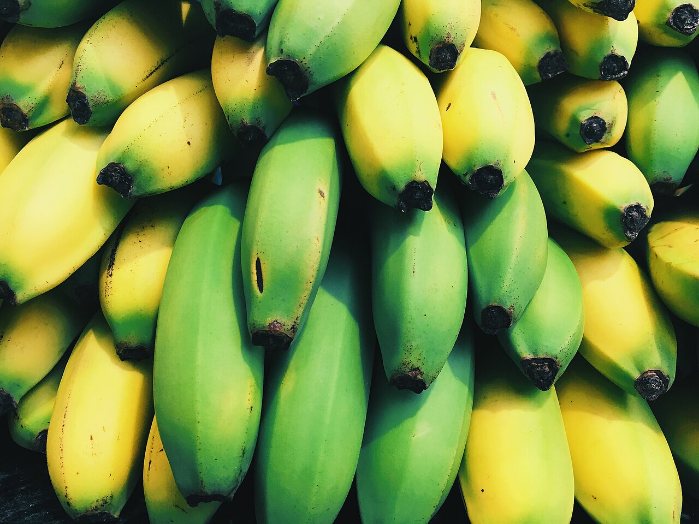

其他植物激素
本期导读
五类激素 · 相互作用 · 共同调节

视频原话 · 导读3 句
- 同学们好！这节课梳理人教版选择性必修一第五章第二节——其他植物激素。7.5s
- 高考常考各种激素的合成部位和作用、激素之间的相互作用，以及激素含量变化的曲线。8.5s
- 我们按十个考点梳理，每个考点都讲清楚怎么考、怎么做。5.5s
赤霉素01#
赤霉素
合成部位
幼芽、幼根和未成熟的种子
主要作用
促进细胞伸长 → 植株增高
促进细胞分裂与分化
促进种子萌发、开花和果实发育
水稻恶苗病：赤霉菌产生赤霉素 → 植株疯长，结实率降低
易错
赤霉菌产生的赤霉素不是植物激素：它不是植物体内产生的
视频原话4 句
- 考点一，赤霉素。合成部位主要是幼芽、幼根和未成熟的种子。7.0s
- 主要作用：促进细胞伸长，从而引起植株增高；促进细胞分裂与分化；促进种子萌发、开花和果实发育。10.4s
- 水稻恶苗病就和赤霉素有关：赤霉菌产生的赤霉素使植株疯长，结实率反而降低。8.3s
- 易错：赤霉菌产生的赤霉素不是植物激素，因为它不是植物体内产生的。7.2s
细胞分裂素02#
细胞分裂素
合成部位
主要是根尖
主要作用
促进细胞分裂
促进芽的分化、侧枝发育
促进叶绿素合成
考法
延缓叶片衰老 → 蔬菜保鲜；与生长素在促进细胞分裂上协同
视频原话3 句
- 考点二，细胞分裂素。合成部位主要是根尖。5.2s
- 主要作用：促进细胞分裂；促进芽的分化、侧枝发育和叶绿素合成。7.0s
- 考法：细胞分裂素能延缓叶片衰老，可用于蔬菜保鲜；它和生长素在促进细胞分裂上是协同的。9.6s
脱落酸03#
脱落酸
合成部位
根冠、萎蔫的叶片等
主要作用
抑制细胞分裂
促进气孔关闭
促进叶和果实的衰老和脱落
维持种子休眠
干旱 → 叶片中脱落酸增多 → 气孔关闭，减少水分散失
考法
小麦穗上发芽：干热使脱落酸降解 → 休眠解除，遇雨萌发
视频原话4 句
- 考点三，脱落酸。合成部位是根冠、萎蔫的叶片等。5.7s
- 主要作用：抑制细胞分裂；促进气孔关闭；促进叶和果实的衰老和脱落；维持种子休眠。8.9s
- 干旱时，叶片中的脱落酸增多，气孔关闭，减少水分散失，帮助植物度过不良环境。8.4s
- 考法：小麦即将成熟时，如果经历干热后又遇大雨，种子容易在穗上发芽，原因是高温使脱落酸降解，种子的休眠被解除。12.4s
乙烯04#
乙烯
合成部位
植物体各个部位（气体激素）
主要作用
促进果实成熟
促进开花
促进叶、花、果实脱落
易错
乙烯促进果实成熟，生长素促进果实发育；无子番茄用的是生长素
视频原话4 句
- 考点四，乙烯。植物体各个部位都能合成乙烯，它是一种气体激素。7.0s
- 主要作用：促进果实成熟；促进开花；促进叶、花、果实脱落。6.9s
- 生活中，把成熟的苹果和青香蕉放在一起，香蕉会熟得更快，就是成熟苹果释放的乙烯在起作用。9.3s
- 易错：乙烯促进果实成熟，生长素促进果实发育，二者不要混淆；培育无子番茄用的是生长素，不是乙烯。10.6s
油菜素内酯05#
油菜素内酯
地位
已被认定为第六类植物激素
主要作用
促进茎、叶细胞的扩展和分裂
促进花粉管生长
促进种子萌发
考法
以抑制作用为主的是脱落酸；促进脱落的有脱落酸和乙烯
视频原话3 句
- 考点五，油菜素内酯，已被正式认定为第六类植物激素。5.7s
- 它能促进茎、叶细胞的扩展和分裂，促进花粉管生长和种子萌发等。6.7s
- 考法：六类植物激素中，脱落酸以抑制作用为主；常考的“促进脱落”有两种激素：脱落酸和乙烯。9.1s
协同与相抗衡06#
协同
同一过程：促进细胞分裂
生长素：主要促进细胞核分裂
细胞分裂素：主要促进细胞质分裂
相抗衡
同一过程：调节种子萌发
赤霉素：促进萌发
脱落酸：抑制萌发
解题方法
先锁定同一生理过程，再看作用方向：一致 → 协同；相反 → 相抗衡
视频原话4 句
- 考点六，激素之间的相互作用：协同与相抗衡。5.1s
- 协同：在促进细胞分裂方面，生长素主要促进细胞核的分裂，细胞分裂素主要促进细胞质的分裂，二者表现为协同作用。11.9s
- 相抗衡：在调节种子萌发方面，赤霉素促进萌发，脱落酸抑制萌发，二者作用相抗衡。8.8s
- 解题方法：先锁定同一生理过程，再看两种激素的作用方向是否一致：一致是协同，相反是相抗衡。10.0s
生长素与乙烯07#
考法
可解释高浓度生长素抑制生长；常结合两种激素含量变化曲线考查
视频原话4 句
- 考点七，生长素和乙烯的关系。3.5s
- 当生长素浓度升高到一定值时，就会促进乙烯的合成；5.3s
- 而乙烯含量的升高，反过来又会抑制生长素的作用。4.9s
- 考法：这可以解释高浓度生长素为什么会抑制生长；题目常给出两种激素含量变化的曲线，让你分析这种相互作用。10.9s
激素的相对含量08#
决定器官发育的，往往是不同激素的相对含量
黄瓜茎端：脱落酸 / 赤霉素
比值高 → 雌花
比值低 → 雄花
组织培养：生长素 / 细胞分裂素
比值高 → 生根
比值低 → 生芽
易错
生长素多 → 生根；细胞分裂素多 → 生芽，不要记反
视频原话4 句
- 考点八，决定器官生长发育的，往往不是某种激素的绝对含量，而是不同激素的相对含量。8.4s
- 例如，黄瓜茎端脱落酸与赤霉素的比值较高，有利于分化形成雌花；比值较低，有利于分化形成雄花。10.1s
- 又如植物组织培养中，生长素与细胞分裂素的比值高时，有利于根的分化；比值低时，有利于芽的分化。9.7s
- 易错：抓住“生长素多，生根”“细胞分裂素多，生芽”，不要记反。6.4s
调节的顺序性09#
猕猴桃果实发育：各激素按次序出现高峰，像接力一样
不是单一激素调节，而是多种激素相互作用、共同调节
考法
先找各激素出现高峰的时间，再联系该时期果实在分裂、伸长还是成熟
视频原话4 句
- 考点九，激素调节在时间上的顺序性。4.0s
- 在猕猴桃果实的发育过程中，细胞分裂素、生长素、赤霉素、脱落酸等激素的含量，会像接力一样，按照次序出现高峰。11.3s
- 这说明植物的生长发育，不是受单一激素的调节，而是多种激素相互作用、共同调节的结果。8.9s
- 考法：看激素含量的曲线，先找各激素出现高峰的时间，再联系那个时期果实是在细胞分裂、细胞伸长还是成熟。11.3s
激素与基因表达10#
易错
激素不直接参与细胞代谢，只传递信息；根本上是基因组在一定时间和空间上程序性表达的结果
视频原话4 句
- 考点十，植物激素调节与基因表达的关系。4.6s
- 植物生长发育的调控，是由基因表达调控、激素调节和环境因素调节共同完成的。7.8s
- 激素作为信息分子，会影响细胞的基因表达；同时，激素的产生和分布，是基因表达调控的结果，也受环境因素的影响。11.3s
- 易错：植物激素不直接参与细胞代谢，而是给细胞传达调节代谢的信息；植物生长发育从根本上说，是基因组在一定时间和空间上程序性表达的结果。14.4s
易错速查✓
先自己判断，再点按钮查看对错与解析。
- 1赤霉素能促进细胞伸长，引起植株增高说法正确。
- 2脱落酸能促进种子萌发说法错误：维持种子休眠，抑制萌发
- 3乙烯只在成熟的果实中合成说法错误：植物体各个部位都能合成
- 4赤霉素与脱落酸在种子萌发方面作用相抗衡说法正确。
- 5生长素与细胞分裂素比值高时有利于芽的分化说法错误：有利于根的分化
- 6植物激素直接参与细胞代谢说法错误：只传递调节代谢的信息
记准部位和作用，激素关系一图看清！
视频原话 · 易错速查5 句
- 最后，用六道判断题检验一下。3.6s
- 赤霉素能促进细胞伸长，引起植株增高？对。脱落酸能促进种子萌发？错，它维持种子休眠。10.4s
- 乙烯只在成熟的果实中合成？错，植物体各个部位都能合成。赤霉素与脱落酸在种子萌发方面作用相抗衡？对。12.0s
- 生长素与细胞分裂素比值高时有利于芽的分化？错，有利于根的分化。植物激素直接参与细胞代谢？错，只传递调节代谢的信息。13.5s
- 十个考点串起来：五类激素记准合成部位和作用，再看协同、相抗衡、相对含量和顺序性，最后回到基因表达。掌握这些，植物激素就能稳稳拿分！我们下期再见！16.1s
图片来源
图片来源：Wikimedia Commons —— Scott Webb《Ripening bananas (Unsplash)》CC0
Photo: Scott Webb, CC0